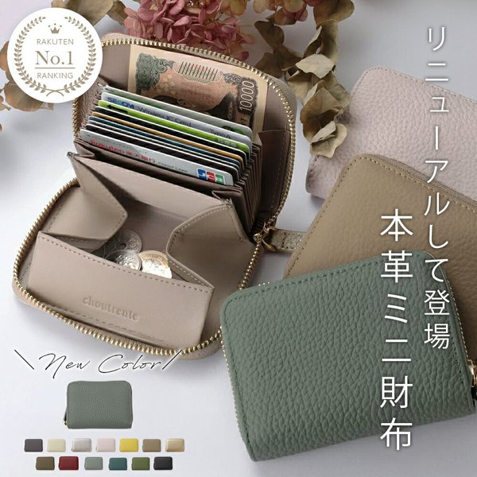
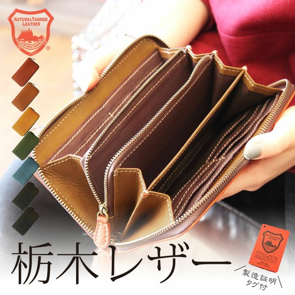
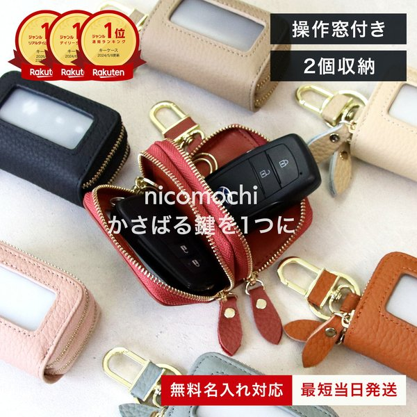
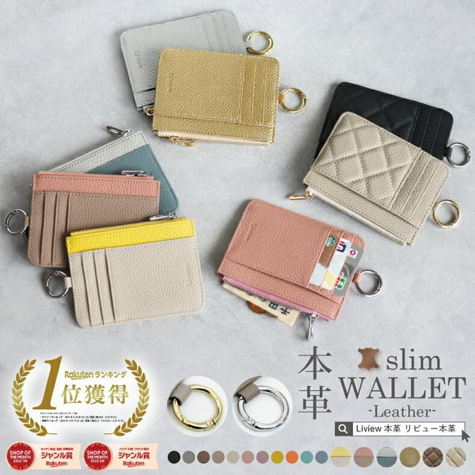
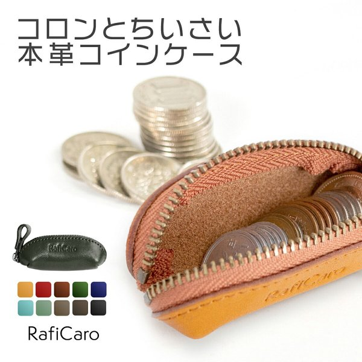
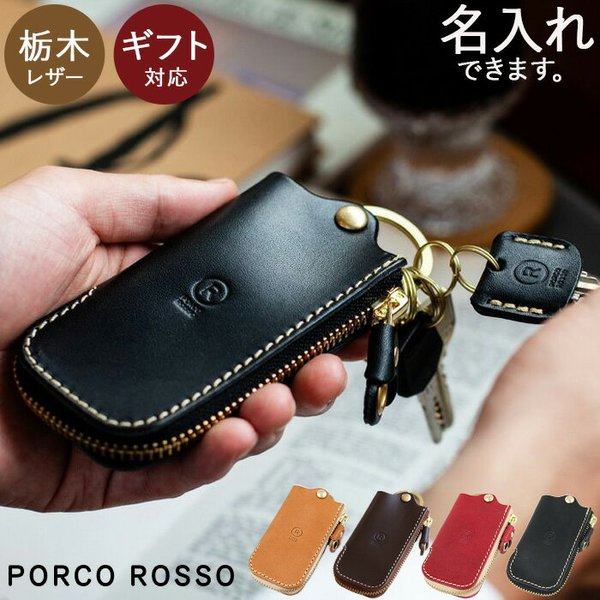
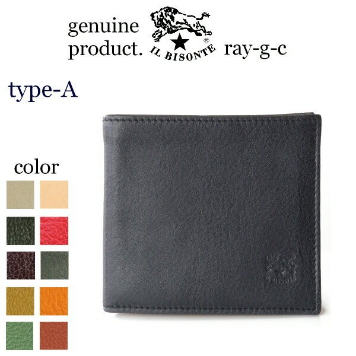
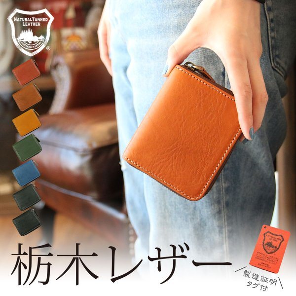
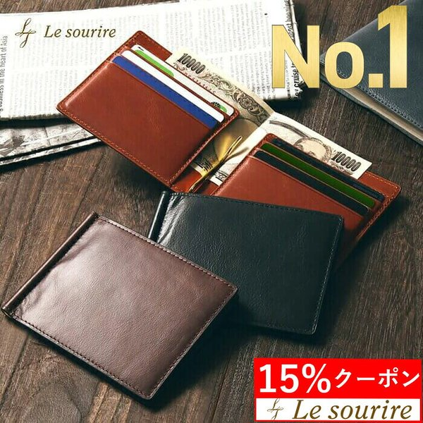

【2026年】クリスマスギフトにも春財布にも｜本革ミニ財布・長財布・キーケース10選
財布は、毎日いちばん多く触る持ち物です。だからこそ、くたびれてきたら買い替え時。11月下旬はクリスマスギフトの需要と、年末年始の買い替えが重なる時期で、人気のモデルから在庫が薄くなっていきます。
選ぶ軸は、毎日持ち歩く大きさか、カードと小銭をどこまで入れるか、そして革の種類の3つです。ミニ財布は小さなバッグに、長財布はレシートやカードが多い人に向きます。フラグメントケースは「カードと小銭だけ」の日にちょうどいい形です。革は、栃木レザーのように国産で厚みのあるもの、ブライドルレザーのように艶が出るもの、ヌメ革のように色が育つものがあり、使うほど味が出ます。贈り物なら名入れが無料の商品を選ぶと、そのまま渡せます。
本記事では、楽天市場で人気・高評価の本革の財布とキーケース10選を、実売価格とレビュー評価つきで写真付き紹介します。
- おすすめ10選 スペック・特徴比較表
- BEST 1｜二つ折り財布 メンズ 本革 ブライドルレザー（名入れ無料・ボックス型小銭入れ）
- BEST 2｜本革ミニ財布 レディース 二つ折り じゃばら（小銭入れ付きカードケース）
- BEST 3｜栃木レザー 長財布 ラウンドファスナー（レディース・メンズ兼用）
- BEST 4｜スマートキーケース 2個収納 本革（操作窓付き・名入れ無料）
- BEST 5｜本革 フラグメントケース（8ポケット・45g・選べる金具）
- BEST 6｜本革 小銭入れ コインケース イタリアンレザー（L字ファスナー）
- BEST 7｜キーケース スマートキーケース 栃木レザー（名入れ・日本製）
- BEST 8｜二つ折りウォレット Type-A（ヌメ革・定番モデル）
- BEST 9｜ミニ財布 栃木レザー ラウンドファスナー（日本製・カードケース兼用）
- BEST 10｜マネークリップ 財布 本革 オイルレザー（カード7枚収納）
- 【読者負担0円】買わなくても得する無料サービス
- まとめ：本革の財布・キーケース10選の選び方
| 順位 | 商品名 | ブランド | 最大の特徴・おすすめ理由 | 総合評価 |
|---|---|---|---|---|
| BEST 1 | 二つ折り財布 メンズ 本革 ブライドルレザー（名入れ無料・ボックス型小銭入れ） | BRITISH GREEN（ブリティッシュグリーン） | 英国製ブライドルレザーを使用 | 4.44 |
| BEST 2 | 本革ミニ財布 レディース 二つ折り じゃばら（小銭入れ付きカードケース） | choutrente（シュトレンテ） | じゃばら式でカードが見渡せる | 4.52 |
| BEST 3 | 栃木レザー 長財布 ラウンドファスナー（レディース・メンズ兼用） | 栃木レザー | 国産・栃木レザー使用 | 4.50 |
| BEST 4 | スマートキーケース 2個収納 本革（操作窓付き・名入れ無料） | nicomachi | スマートキー2個収納＋操作窓 | 4.55 |
| BEST 5 | 本革 フラグメントケース（8ポケット・45g・選べる金具） | Liview | 厚さ8mm・45gの薄型 | 4.45 |
| BEST 6 | 本革 小銭入れ コインケース イタリアンレザー（L字ファスナー） | RafiCaro | L字ファスナーで小銭を取りやすい | 4.68 |
| BEST 7 | キーケース スマートキーケース 栃木レザー（名入れ・日本製） | PORCO ROSSO（ポルコロッソ） | 栃木レザー・日本製 | 4.77 |
| BEST 8 | 二つ折りウォレット Type-A（ヌメ革・定番モデル） | IL BISONTE（イルビゾンテ） | 定番Type-Aの二つ折り | 4.85 |
| BEST 9 | ミニ財布 栃木レザー ラウンドファスナー（日本製・カードケース兼用） | 栃木レザー | 栃木レザー・日本製 | 4.66 |
| BEST 10 | マネークリップ 財布 本革 オイルレザー（カード7枚収納） | Le sourire（ル・スリール） | 札ばさみ式で薄い | 4.60 |
二つ折り財布 メンズ 本革 ブライドルレザー（名入れ無料・ボックス型小銭入れ）

英国製ブライドルレザーを使った二つ折り財布。ブライドルレザーは馬具用に作られた厚手の革で、使い込むほど艶が出るのが特長です。小銭入れがボックス型で大きく開くため、レジで小銭を探す時間が短くなります。カード収納も確保されていて、キャッシュレス併用の財布としても使えます。名入れが無料なので、クリスマスや誕生日の贈り物にもそのまま使えます。楽天市場での実売価格は約11,000円（2026年11月時点）。
- 英国製ブライドルレザーを使用
- 名入れ無料でギフトにできる
- ボックス型小銭入れで開きやすい
- 革が厚いぶん、使い始めは少し硬い
本革ミニ財布 レディース 二つ折り じゃばら（小銭入れ付きカードケース）

手のひらに収まる小さな本革ミニ財布。開くとじゃばら状にカードが並び、小銭入れと札入れがひとつにまとまっています。厚みが出にくい作りなので、小さめのバッグでも場所を取りません。ICカードや磁気カードのスキミング防止仕様で、京童工房が作る日本製です。色は落ち着いたニュアンスカラーが揃い、春財布として明るい色を選ぶのも手です。楽天市場での実売価格は約2,780円（2026年11月時点）。
- じゃばら式でカードが見渡せる
- 小銭入れ付きのコンパクト設計
- スキミング防止・日本製
- じゃばら式のため、カードを入れすぎると閉まりにくい
栃木レザー 長財布 ラウンドファスナー（レディース・メンズ兼用）

国産の栃木レザーを使ったラウンドファスナー式の長財布。革の製造証明タグが付いてくるので、素材の産地がはっきりしています。ファスナーを大きく開けば札もカードも一覧でき、レジや改札での動作が少なくて済みます。革が厚く、使うほどに角が丸くなって手に馴染んでいくタイプ。長く使う前提で選ぶなら、この形が扱いやすいです。楽天市場での実売価格は約14,800円（2026年11月時点）。
- 国産・栃木レザー使用
- ラウンドファスナーで中身が見やすい
- 使い込むほど味が出る
- ファスナー式なので、開け閉めに少し手間がかかる
スマートキーケース 2個収納 本革（操作窓付き・名入れ無料）

スマートキーを2個収納できる本革のキーケース。透明な操作窓が付いているので、キーを出さずにロックや解錠のボタンを押せます。ダブルファスナーで開閉し、カラビナ付きなのでバッグの内側に引っかけられます。小銭入れも付いており、駐車券や小銭をまとめられます。名入れが無料なので、夫婦や家族で色違いを揃える使い方にも向いています。楽天市場での実売価格は約1,980円（2026年11月時点）。
- スマートキー2個収納＋操作窓
- カラビナ付きで落としにくい
- 名入れ無料
- 2個収納のため、鍵が3個以上ある人は別の形が向く
本革 フラグメントケース（8ポケット・45g・選べる金具）

カードと小銭だけを持ち歩く日のための、本革フラグメントケース。厚さ8mm・重さ45gで、8つのポケットにカードを分けて入れられます。金具の色を選べるので、手持ちのバッグや時計に合わせやすくなっています。ちょっとした買い物や通院など、長財布を持ち出すほどでもない日にちょうどいいサイズです。楽天市場での実売価格は約2,080円（2026年11月時点）。
- 厚さ8mm・45gの薄型
- 8ポケットでカードを整理できる
- 金具の色を選べる
- カード中心の設計で、札を多く持ち歩く人には薄すぎる
本革 小銭入れ コインケース イタリアンレザー（L字ファスナー）

イタリアンレザーを使った小さなコインケース。L字にファスナーが開くので、小銭がつかみ取りやすく、レジでのやり取りが短くなります。小銭のほか、印鑑やピルケース、イヤホンの収納にも使えるサイズ感です。財布を分けて持ちたい人や、サブの小銭入れを足したい人に向いています。楽天市場での実売価格は約1,480円（2026年11月時点）。
- L字ファスナーで小銭を取りやすい
- 印鑑・小物の収納にも使える
- 1,500円前後で試しやすい
- 小銭専用のため、カードは数枚しか入らない
キーケース スマートキーケース 栃木レザー（名入れ・日本製）

栃木レザーを使ったファスナー式のキーケース。車のスマートキーが入るサイズで、家の鍵とまとめて持ち歩けます。日本製で、名入れにも対応しているため、還暦祝いや結婚記念日の贈り物として選ばれています。革が厚めで型崩れしにくく、鍵の重みでケースが伸びにくいのも長く使える理由です。楽天市場での実売価格は約8,580円（2026年11月時点）。
- 栃木レザー・日本製
- スマートキーが入るサイズ
- 名入れでギフトにできる
- 名入れは到着までに日数がかかる
二つ折りウォレット Type-A（ヌメ革・定番モデル）

イルビゾンテの定番、二つ折りウォレットのType-A。ヌメ革ならではの素朴な風合いで、使うほどに色が濃くなって自分だけの表情になっていきます。財布の厚みが増えにくい作りで、カードを入れすぎなければスーツの内ポケットにも収まります。価格は張りますが、10年単位で使う前提なら1年あたりの負担は小さくなります。楽天市場での実売価格は約28,600円（2026年11月時点）。
- 定番Type-Aの二つ折り
- ヌメ革が育つ経年変化
- 長く使える国内正規品
- ヌメ革は水に弱いので、雨の日は注意が必要
ミニ財布 栃木レザー ラウンドファスナー（日本製・カードケース兼用）

栃木レザーを使ったラウンドファスナー式のミニ財布。小ぶりながらカードと小銭、札をひとまとめにでき、ポケットに入れても膨らみません。日本製で、革の裁断から縫製まで国内で仕上げています。ミニ財布は「小さいけれど安っぽく見える」ものが多いので、素材で選ぶなら栃木レザーが無難です。楽天市場での実売価格は約8,790円（2026年11月時点）。
- 栃木レザー・日本製
- ラウンドファスナーで中身が見える
- ポケットに入る小ぶりサイズ
- 小ぶりなので、レシートを溜める人には容量が足りない
マネークリップ 財布 本革 オイルレザー（カード7枚収納）

札を挟んで使うマネークリップ式の財布。オイルレザーなので、使い始めから柔らかく手に馴染みます。カードは7枚収納でき、小銭は持たずにキャッシュレスで済ませる日の財布として軽いのが魅力です。財布の厚みが気になっていた人ほど、替えたときの差を感じやすい商品です。楽天市場での実売価格は約3,499円（2026年11月時点）。
- 札ばさみ式で薄い
- カード7枚収納
- オイルレザーで馴染みが早い
- 小銭入れがないため、現金派には別途コインケースが必要
この記事の商品を買う前に、まずは無料で得する選択肢をチェック。どれも登録・利用は0円で、無料期間中に解約すれば料金はかかりません。読みたい雑誌がある人、ポイントを貯めたい人、アンケートなら気軽という人、それぞれに合うものを選べます。
初回31日無料・無料期間中に解約すれば0円 → 楽天ポイントモール｜登録無料で毎日ポイ活
買い物なしでもポイントが貯まる無料サービス → 楽天インサイト｜アンケートに答えてポイント
登録無料・すきま時間のアンケートで貯まる → 楽天カード｜年会費永年無料
新規発行・年会費ずっと0円 →
4つのサービスの違いと使い分けは「出費0円で得する！買わずにポイントが貯まる無料サービス厳選4選」でまとめています。
💡 まとめ：本革の財布・キーケース10選の選び方
財布の買い替えは、大きさを決めるところから始まります。カードと小銭だけならミニ財布かフラグメントケース、レシートやポイントカードも持ちたいなら長財布、現金をほとんど使わないならマネークリップ。この3つから選べば、持ち歩く荷物が自然と減ります。革は栃木レザーやブライドルレザーを選んでおけば、使い込むほど手に馴染み、10年単位で使えます。クリスマスや誕生日の贈り物には、名入れが無料の財布やキーケースが便利です。11月下旬は在庫が動く時期なので、色を決めているなら早めに確保しておくのがおすすめです。
楽天市場では「5と0のつく日」や「お買い物マラソン」などのキャンペーンに合わせて購入すると、ポイント還元が最大化してお得に手に入ります。ぜひチェックしてみてくださいね。